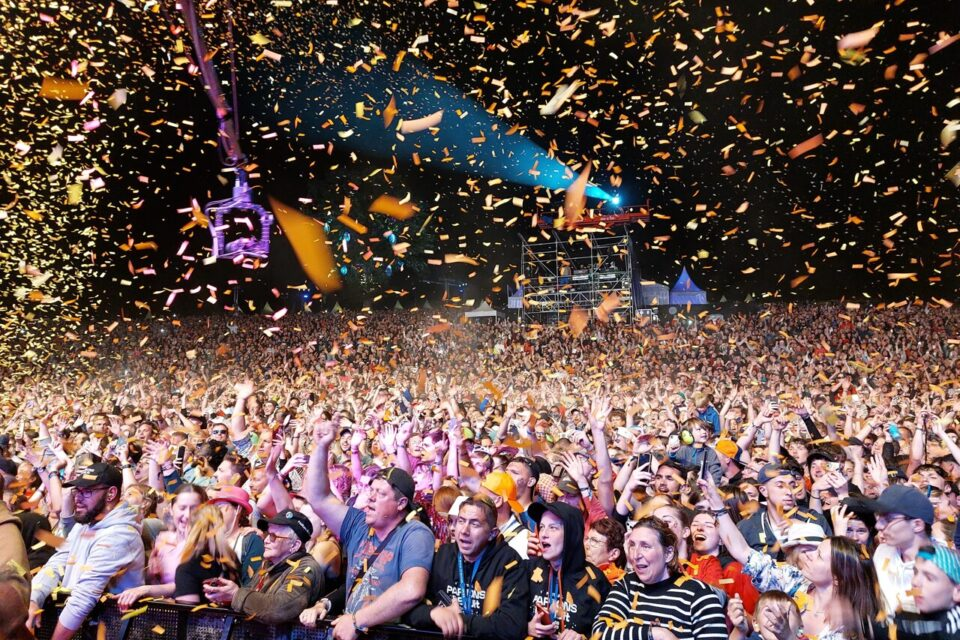

À l’heure où les festivals associatifs se voient peu à peu rachetés par des fonds privés, Papillons de Nuit lutte et résiste, depuis 2001. P2N c’est avant tout un projet de territoire avec pour objectif de favoriser l’accès à la culture dans une zone en voie de désertification rurale. Organisé par une association à but non lucratif et d’intérêt général, Papillons de Nuit est un projet humain qui peut compter sur ses 1 600 bénévoles réunis le temps d’un week-end et sans qui le festival ne pourrait avoir lieu. Ces bénévoles sont essentiels à la survie d’un festival indépendant, dont chaque édition est un nouveau défi économique. Le travail collectif a fait le succès et l’identité de P2N. La volonté de chacun et chacune à faire bouger les choses contribue, année après année, à faire de Papillons de Nuit un projet de territoire, l’événement incontournable en Normandie !
Il y a trop d’artistes beaucoup trop cools, et tu galères à t’y retrouver et à faire ton programme. Pour t’aider un peu, on t’a fait un récap des horaires des concerts
Sur le site du festival, de la bière au t-shirt, tout est payable grâce à la puce SouPap’s. Celle-ci est intégrée à ton bracelet et est scannée chaque fois que tu fais un achat. L’argent que tu y a déposé est alors débité et le solde est remboursé sur demande après le festival. Pense à créditer ta puce SouPap’s avant d’arriver au festival pour avoir l’esprit tranquille !
Les campeur.euses aussi ont droit au confort ! Équipé de douches et de sanitaires, le camping est gratuit et sans réservation, pour toute personne détentrice d’un billet pour le festival. Et cerise sur le papillon, il y a aussi de quoi bien s’occuper ! Retrouve ici le détail et les horaires de toutes les animations sur le camping :
Pour toute question ou information supplémentaire, veuillez nous contacter :